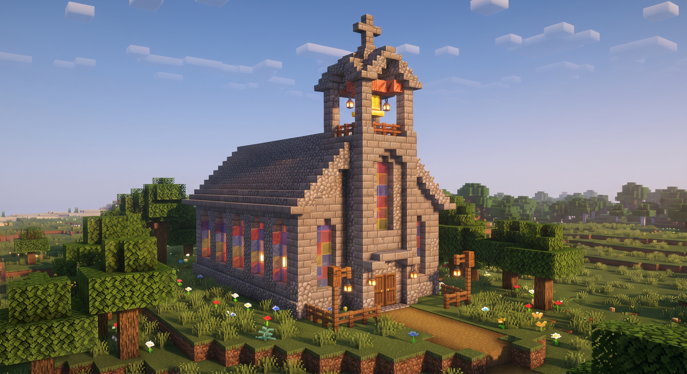
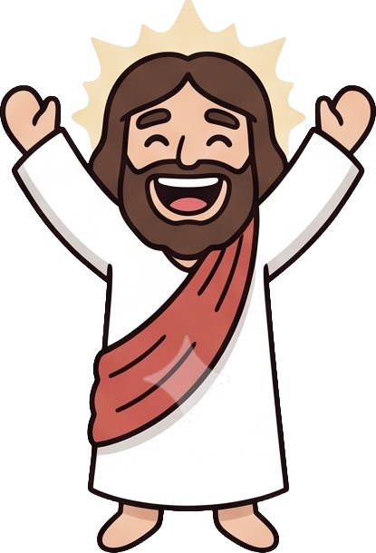
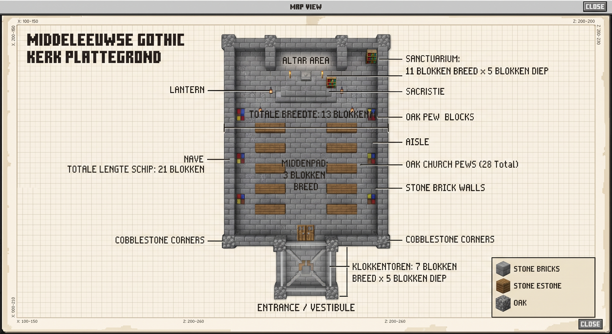
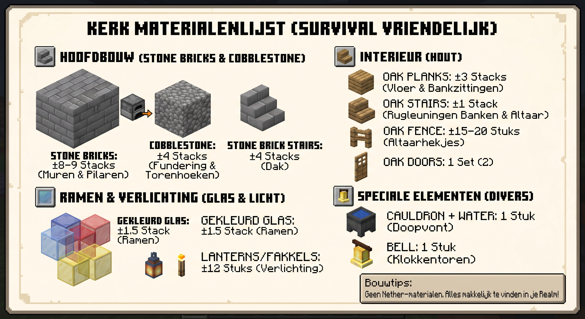

1. Het Altaar & Sanctuarium
Het heilige hart van de kerk. Verhoogd met één of twee treden, omringd door houten hekjes, met een stenen altaartafel en een kruisbeeld of fakkels.
Hier vind je alle plannen, afmetingen en benodigde bouwstoffen om samen onze virtuele parochiekerk op te richten. Van de eerste cobblestone fundering tot de gouden luidklok in de toren!
Deze plannen en tekeningen zijn een inspiratiebron en leidraad. Je hoeft het ontwerp niet blokje voor blokje rigide te kopiëren: creativiteit, eigen ideeën en variatie maken onze kerk net levendig en uniek!
De enige gouden regel: zorg ervoor dat alle wezenlijke elementen van de kerk aanwezig zijn (de klokkentoren met luidklok, het altaar & het sanctuarium, gekleurde glas-in-lood ramen, een middenpad met zitbanken en de doopvont).
⛪ Visie & Inspiratie ⛪
Zo ziet onze kerk eruit wanneer alle stenen en balken op hun plek vallen. Een robuuste, warme gotische dorpskerk van natuursteen, met een statige toren en sfeervolle lantaarns.

Kenmerken van het exterieur: Een zadeldak van Stone Brick Stairs, muren van afgewisselde Stone Bricks en Cobblestone voor natuurlijk reliëf, een houten portaal met eiken deuren, en hoge spitsbogen met gekleurd glas. Bovenop de toren prijkt het kruis!

"Elke steen telt mee!"📏 Maatvoering & Indeling 📏
Gebruik deze bovenaanzicht-plattegrond om de fundering af te bakenen. Hierop zie je precies hoeveel blokken breed en diep elk gedeelte is.

Blokafmetingen in een oogopslag:
13 blokken breed
21 blokken lang
Muren van Stone Bricks met Cobblestone hoekpilaren.
11 blokken breed
5 blokken diep
Verhoogd altaarplateau met trapjes en sacristie met boekenkast.
7 blokken breed
5 blokken diep
De trotse ingang met dubbele eiken deuren en trap naar de klok.
3 blokken breed middenpad
28 eiken kerkbanken verdeeld langs weerszijden.
⛏️ Survival Vriendelijk ⛏️
Goed nieuws voor delvers en houthakkers: alle grondstoffen zijn 100% in de Overworld te vinden! Er zijn géén gevaarlijke Nether- of End-materialen nodig.

✝ Gewijde Kenmerken ✝
Zelfs als je eigen variaties aanbrengt aan het dak of de afmetingen, maken deze 6 onderdelen van ons gebouw een échte kerk:
Het heilige hart van de kerk. Verhoogd met één of twee treden, omringd door houten hekjes, met een stenen altaartafel en een kruisbeeld of fakkels.
Het herkenningspunt in het landschap. Bovenin hangt een bel of noteblock die spelers kunnen luiden wanneer de bijeenkomst begint.
Hoge ramen met patronen van blauw, rood en geel glas. Het zonlicht dat erdoorheen valt geeft het schip een mystieke en warme gloed.
Een breed gangpad van 3 blokken breed waar iedereen vlot kan lopen, met aan weerszijden houten kerkbanken waar parochianen kunnen plaatsnemen.
Traditioneel geplaatst nabij de ingang: een met gewijd water gevulde ketel (cauldron) als symbool van nieuw leven en toetreding tot de gemeenschap.
Geen overdaad aan fakkels op de grond, maar smaakvol hangende lantaarns aan kettingen of pilaren. Dit houdt griezelige mobs buiten en brengt sfeer!
Kopieer het serveradres en stap direct binnen op de bouwplaats!